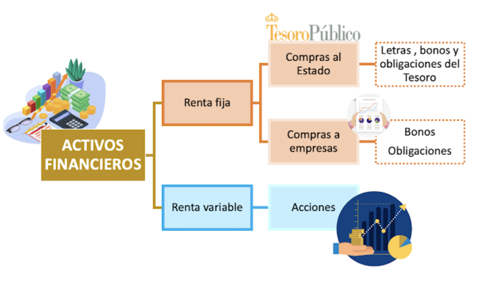
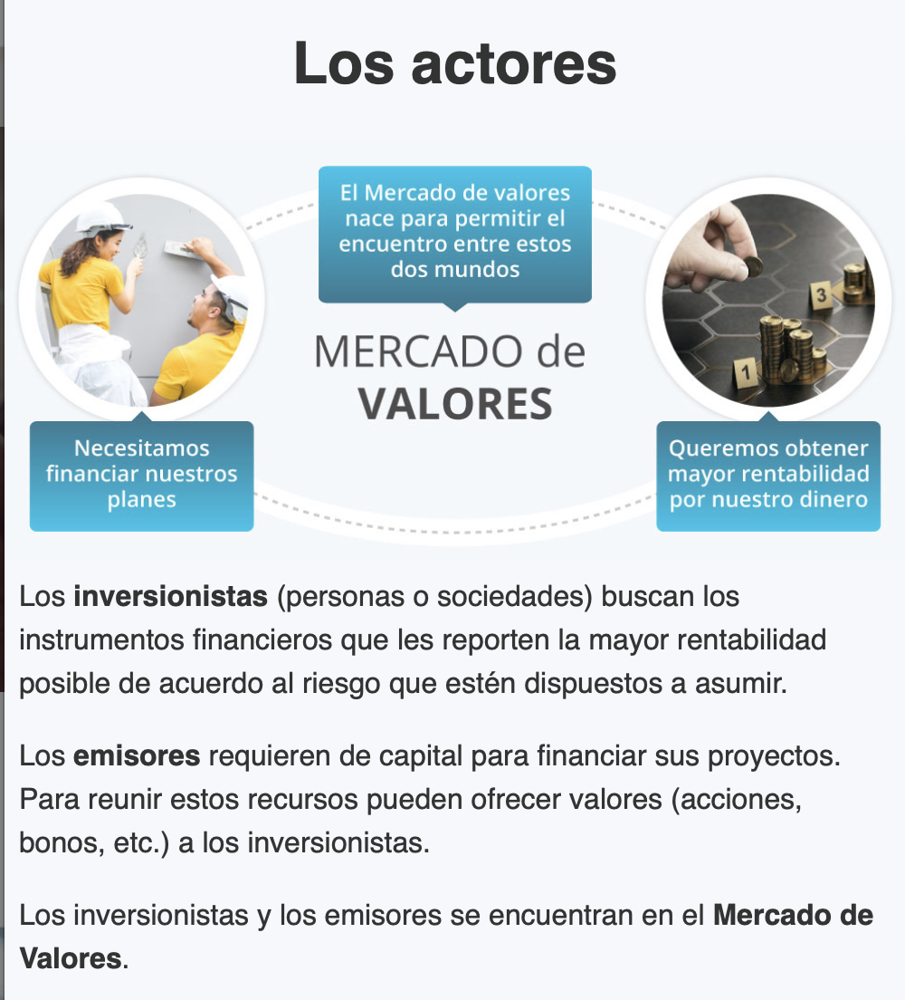
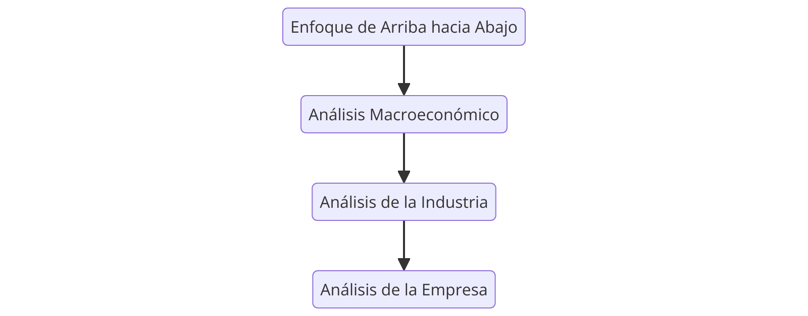

Objetivos de la Clase
- Comprender la importancia de la distinción entre activos reales y activos financieros en la economía.
- Analizar cómo los activos reales determinan la riqueza material y la capacidad productiva de una sociedad.
- Examinar el rol de los activos financieros como herramientas de asignación de ingresos en lugar de generación directa de riqueza.
- Explorar la relación entre la riqueza nacional y los activos reales como indicador del bienestar económico.
La Riqueza Material y la Capacidad Productiva
- La riqueza material de una sociedad está determinada por la capacidad productiva de su economía, es decir, los bienes y servicios que pueden crear sus miembros.
- Esta capacidad depende de los activos reales de la economía: tierras, edificios, maquinaria y conocimientos para producir bienes y servicios.
Activos Financieros vs Activos Reales
- En contraste, los activos financieros como acciones y bonos son simplemente registros en papel o digitales.
- No contribuyen directamente a la capacidad productiva de la economía, sino que representan derechos sobre los ingresos generados por los activos reales.
- Ejemplo: si no podemos tener una planta de autos, podemos comprar acciones de Ford o Toyota y participar en sus ingresos.
Generación y Distribución de Ingresos
- Los activos reales generan ingresos netos a la economía.
- Los activos financieros simplemente definen la asignación de ingresos entre los inversores.
- Cuando una empresa emite valores, los ingresos se usan para financiar activos reales, que generan los retornos para los inversores.
Activos Reales como Riqueza Nacional
- La diferencia entre activos reales y financieros es clara en los balances de hogares y en la riqueza nacional.
- La riqueza incluye activos financieros (cuentas bancarias, acciones), pero estos son pasivos para sus emisores.
- En el agregado de todos los balances, las reclamaciones de activos financieros se cancelan, dejando sólo los activos reales como la riqueza neta de la economía.
- La riqueza nacional consiste en estructuras, equipos, inventarios y tierras.
¿Son los siguientes activos reales o financieros?
- a. Patentes
- c. Buena voluntad del cliente
- d. Una educación universitaria
- e. Un billete de $5
Activos Reales vs. Activos Financieros
| Terrenos |
Activo Real |
| Edificios |
Activo Real |
| Maquinaria |
Activo Real |
| Patentes |
Activo Real |
| Inventarios |
Activo Real |
| Cuentas por Cobrar |
Activo Financiero |
| Inversiones en Acciones |
Activo Financiero |
| Bonos |
Activo Financiero |
| Caja y Bancos |
Activo Financiero |
| Derechos de Autor |
Activo Real |
Activos Financieros
- Existen tres tipos principales de activos financieros:
- Renta fija
- Renta variable
- Derivados
Renta Fija
- Activos de Renta Fija o Deuda: Prometen un flujo de ingresos fijo o determinado por una fórmula específica.
- Ejemplo: Bonos corporativos que prometen pagos de intereses anuales.
- Variedad de valores de renta fija:
- Mercado monetario: Valores a corto plazo y bajo riesgo (ej. letras del tesoro, certificados de depósito).
- Mercado de capitales: Valores a largo plazo con distintos niveles de riesgo, como bonos del estado, bonos municipales y bonos corporativos.
Renta Variable
- Acciones comunes o Renta Variable: Representan participación en la propiedad de una empresa.
- No garantizan pagos específicos.
- Los accionistas reciben dividendos y tienen una participación proporcional en los activos reales de la empresa.
- La rentabilidad de la renta variable está directamente ligada al desempeño de la empresa.
- Mayor riesgo en comparación con la renta fija.
Derivados
- Activos Derivados: Como las opciones y contratos de futuros, cuyo valor se determina por el precio de otros activos (ej. acciones o bonos).
- Ejemplo: Una opción de compra sobre una acción de Intel.
- Utilizados para gestión de riesgo (cobertura) o para tomar posiciones especulativas.
- Permiten ajustar la exposición a diferentes riesgos empresariales.
Comparación de Activos Financieros
| Renta Fija |
Bonos corporativos |
Pagos fijos o definidos por fórmula |
| Renta Variable |
Acciones |
Propiedad parcial, pagos variables |
| Derivados |
Opciones, Futuros |
Valor basado en otros activos subyacentes |
Diagrama de Activos Financieros
Tipos de Activos Financieros
Mercados de Divisas y Commodities
- Mercados de Divisas:
- Importante en transacciones internacionales.
- Ejemplo: En Londres, se negocian más de $2 billones diarios en divisas.
- Mercados de Commodities:
- Ejemplo: Contratos de futuros de cobre para asegurar precios.
- Usados para cubrir riesgos en materiales como maíz, gas, oro, etc.
Actores Mercado Financiero
Actores Mercado Financiero
Importancia de los Activos Financieros
- Los activos reales determinan la riqueza de una economía, mientras que los activos financieros representan derechos sobre esos activos.
- Permiten optimizar el uso de los activos reales de una economía.
Ejemplo de Asignación de Capital
- En 2021, se realizaron grandes inversiones en startups de tecnologías de baterías para energías renovables, impulsadas por la expectativa de altos beneficios.
Temporalidad de Consumo
- Los mercados financieros permiten almacenar poder adquisitivo a través de activos financieros.
- Facilita el consumo a lo largo del ciclo de vida, ajustando periodos de mayores ingresos a periodos de menor capacidad de compra.
Asignación de Riesgo
- Todos los activos reales implican cierto riesgo.
- Mercados financieros permiten a los inversores decidir su nivel de tolerancia al riesgo.
- Los inversores con mayor tolerancia al riesgo adquieren acciones.
- Inversores más conservadores optan por bonos con pagos fijos.
Separación de Propiedad y Gestión
- La estructura de las corporaciones modernas permite la separación entre propietarios y gerentes.
- Esto otorga estabilidad, permitiendo la compra y venta de acciones sin afectar la gestión diaria.
Proceso de Inversión: Portafolio
- Un portafolio representa la colección de activos de inversión de un inversor.
- Se actualiza mediante:
- Venta de valores y compra de nuevos valores.
- Inversión adicional para aumentar el tamaño del portafolio.
- Venta de valores para reducir el tamaño del portafolio.
Tipos de Decisiones de Inversión
- Asignación de Activos:
- Elección entre clases de activos amplias: acciones, bonos, bienes raíces, etc.
- Selección de Valores:
- Elección de valores específicos dentro de cada clase de activos.
Estrategia de Inversión: Top-Down
- Comienza con la Asignación de Activos.
- Establece las características generales del portafolio:
- Ejemplo: Decidir qué proporción invertir en acciones versus bonos.
- Impacto en el riesgo y retorno del portafolio:
- Acciones: Retornos altos (~12% anual) pero volátiles.
- Bonos del Tesoro (T-bills): Retornos bajos (~4%) pero sin riesgo.
Estrategia de Inversión: Top-Down
Enfoque_Top_Down
Análisis de Valores
- Implica evaluar el precio y atractivo de valores específicos.
- Ejemplo: Comparar acciones de Ripley y Falabella.
- La valoración es más compleja para acciones debido a su sensibilidad al desempeño de la empresa emisora.
Estrategia de Inversión: Bottom-Up
- Se centra en seleccionar valores atractivos individualmente.
- Pone menos énfasis en la asignación de activos.
- Riesgo de concentración en un sector o industria específica, lo que puede llevar a una exposición alta a ciertas incertidumbres.
Estrategia de Inversión: Top-Down
Enfoque Abajo hacia Arriba
Mercados Financieros: Competitividad, Riesgo y Rendimiento
Mercados Financieros Competitivos
- Los mercados financieros son altamente competitivos.
- Miles de analistas inteligentes exploran constantemente los mercados buscando las mejores oportunidades.
- Esto implica que pocas veces encontraremos “almuerzos gratis” o valores claramente subvalorados.
El Riesgo y la Relación de Rendimiento
- Los inversores invierten en busca de retornos futuros anticipados, pero casi siempre con riesgo.
- Ejemplos históricos:
- 1931: el índice S&P 500 cayó un 46% (peor año desde 1926).
- 1933: el índice ganó un 55% (mejor año).
Regla de “Sin Almuerzo Gratis” y Retorno
- Los inversores prefieren retornos esperados altos.
- Pero, según la regla de “sin almuerzo gratis”, esto conlleva aceptar mayor riesgo.
- Si un activo ofreciera alto retorno sin riesgo adicional, su precio subiría hasta equilibrarse.
Definición del Retorno Esperado
- El retorno esperado no es necesariamente el retorno probable.
- Se calcula promediando todos los resultados posibles, considerando su probabilidad.
- Los precios de los activos se ajustan hasta que el retorno esperado compense adecuadamente el riesgo.
Diversificación y Riesgo en Carteras
- La diversificación significa mantener varios activos en la cartera, limitando la exposición a cada uno.
- La teoría moderna de carteras, desarrollada por Markowitz y Sharpe (premios Nobel), estudia la relación riesgo-retorno y el impacto de la diversificación.
Mercados Eficientes
- La proposición de “sin almuerzo gratis” sugiere que raramente encontraremos gangas en el mercado.
- Hipótesis de mercados eficientes: los precios reflejan toda la información disponible sobre un valor.
Estrategias de Gestión de Inversiones
- Gestión Pasiva: mantener carteras diversificadas sin análisis activo.
- Gestión Activa: intentar mejorar el rendimiento identificando valores mal valorados o sincronizando con tendencias de mercado.
Implicaciones de la Hipótesis de Mercado Eficiente
- En un mercado extremadamente eficiente, el análisis activo no sería necesario.
- Sin embargo, la eficiencia no es perfecta, lo que permite oportunidades de ganancia para inversores creativos.
- Se examinan los desafíos a esta hipótesis y las estrategias de gestión activa.